Inhalt Index DeskTop Bronstein

 Geometrie Sphärische Trigonometrie Berechnung sphärischer Dreiecke Schiefwinklig sphärisches Dreieck
Geometrie Sphärische Trigonometrie Berechnung sphärischer Dreiecke Schiefwinklig sphärisches Dreieck


Gegeben: 2 Winkel und die einem Winkel gegenüberliegende Seite, z.B. 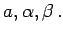
Bedingungen: Siehe Fallunterscheidung.

Lösung: Gesucht beliebige fehlende Größe .
| 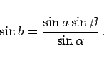 | (3.227) |
2 Werte b1, b2 sind möglich. Es sei b1 spitz und 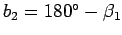 stumpf.
Fallunterscheidung:
Fortführung: Weitere Berechnung mit einer Seite oder 2 Seiten 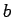.
Dazu wird von C das sphärische Lot auf AB bis D gefällt.
| 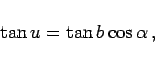 | (3.228a) |
| 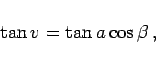 | (3.228b) |
| 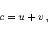 | (3.228c) |
| 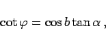 | (3.228d) |
| 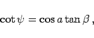 | (3.228e) |
| 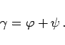 | (3.228f) |
| 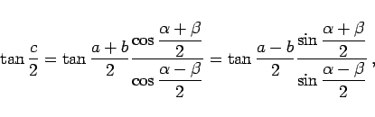 | (3.229a) |
| 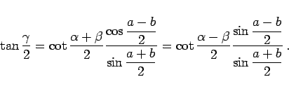 | (3.229b) |
| Beispiel A: Dreiseitige Pyramide |
|
Eine dreiseitige Pyramide hat die Grundfläche ABC und die Spitze 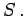
Die Seitenflächen ABS und BCS schneiden sich unter 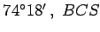 und CAS unter 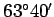 und CAS und ABS unter 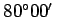. Wie groß sind die Winkel, unter denen sich je zwei der Kanten AS,BS und CS schneiden? 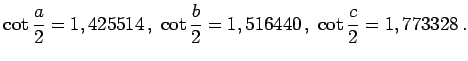 |
| Beispiel B: Funkpeilung |
|
Durch Funkpeilung von zwei festen Stationen 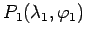 und 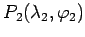 wurden die Azimute 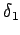 und 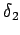 der von einem Schiff ausgesandten Funkwellen gepeilt. Gesucht sind die geographischen Koordinaten des Standortes P0 des Schiffes. Die in der Nautik unter dem Namen Fremdpeilung bekannte Aufgabe stellt einen Vorwärtseinschnitt auf der Kugel dar und wird ähnlich dem Vorwärtseinschnitt in der Ebene gelöst.
|